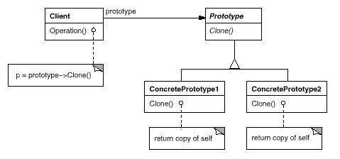

很少见到，我都没遇到过，或是遇到过也没注意。
意图：
用原型实例指定创建对象的种类，并且通过拷贝这些原型创建新的对象。
结构：

-
Prototype
——声明一个克隆自身的接口 -
ConcretePrototype
——实现一个克隆自身的操作
示例代码:
public abstract class Prototype implements Cloneable {
public Prototype clone() {
try {
return (Prototype) super.clone();
} catch (CloneNotSupportedException e) {
e.printStackTrace();
}
return null;
}
public abstract String getThing();
}
public class ConcretePrototype extends Prototype {
@Override
public String getThing() {
return "ConcretePrototype";
}
}
public class Client {
public static void main(String[] args) {
ConcretePrototype cp = new ConcretePrototype();
ConcretePrototype newCp = (ConcretePrototype) cp.clone();
System.out.println(newCp.getThing());
}
}
效果：
这个是真的不需要new来创建对象了，或者说每次去请求新对象的时候都是去拷贝一个原有的对象的副本。听说clone的效率比new高。
问题：
克隆时构造函数不会被调用。
深克隆和浅克隆问题，比如JAVA中一个对象中其成员属性也是对象，单纯的clone操作不会克隆，结果是对象是新的，可是里面的内容的引用地址还是指向原有的。为此需要遍历然后挨个clone。如果遇到不支持克隆的成员，那就无能为力了。
适用：
当一个系统应该独立于它的产品创建、构成和表示时，要使用Prototype模式；以及
- 当要实例化的类是在运行时刻指定时，例如，通过动态装载；或者
- 为了避免创建一个与产品类层次平行的工厂类层次时；或者
- 当一个类的实例只能有几个不同状态组合中的一种时。建立相应数目的原型并克隆它们
可能比每次用合适的状态手工实例化该类更方便一些。
相关模式：
大量使用Composite和Decorator模式的设计通常可以从Prototype模式处获益。